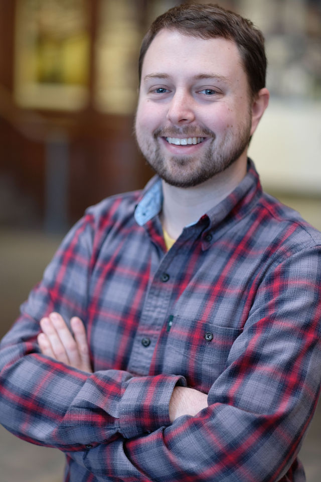

|  |
Branden Ghena(BRAN-duhn JEE-nuh, he/him)branden@northwestern.edu 3305 Mudd Hall
I am an Assistant Professor of Instruction at Northwestern University in the Computer Science Department. I was previously a:
Fall 2022 I am teaching: Selected Projects: [Tock] [LPWAN] [BLE] [Signpost] |
News
- 06/2022: Won the CS Instructor of the Year award at Northwestern
- 06/2021: Survived first year of teaching!
- 09/2020: Started as assistant teaching faculty at Northwestern
- 08/2020: Graduated from UC Berkeley!
- 03/2020: Accepted a position at Northwestern as assistant professor of instruction starting Fall 2020
- 03/2019: Won the Outstanding Graduate Student Instructor Award for Fall 2018
- 04/2018: Signpost wins best demo runner up at IPSN 2018
Selected Publications
"Challenge: Unlicensed LPWANs Are Not Yet the Path to Ubiquitous Connectivity"
Branden Ghena, Joshua Adkins, Longfei Shangguan, Kyle Jamieson, Philip Levis, and Prabal Dutta
In Proceedings of the 25th Annual International Conference on Mobile Computing and Networking (MobiCom'19)
"The Signpost Platform for City-Scale Sensing"
Joshua Adkins, Branden Ghena, Neal Jackson, Pat Pannuto, Sam Rohrer, Bradford Campbell, and Prabal Dutta
In Proceedings of the 17th ACM/IEEE International Conference on Information Processing in Sensor Networks (IPSN’18)
"Multiprogramming a 64 kB Computer Safely and Efficiently"
Amit Levy, Bradford Campbell, Branden Ghena, Daniel B. Giffin, Pat Pannuto, Prabal Dutta, and Philip Levis
In Proceedings of the 26th Symposium on Operating Systems Principles (SOSP’17)
"Green Lights Forever: Analyzing the Security of Traffic Infrastructure"
Branden Ghena, William Beyer, Allen Hillaker, Jonathan Pevarnek, and J. Alex Halderman
In Proceedings of the 8th USENIX Workshop on Offensive Technologies (WOOT'14)